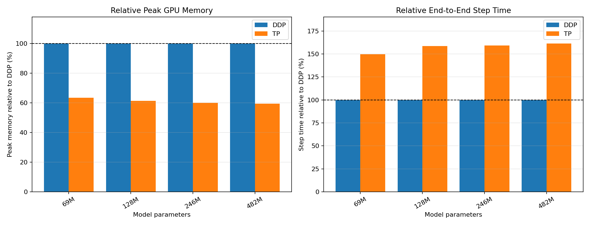

flowchart TD
classDef comm fill:#e8590c,stroke:#8a2e00,color:#ffffff,stroke-width:2px;
classDef data fill:#1971c2,stroke:#0b4a85,color:#ffffff,stroke-width:1px;
B["All-Gather<br/>每人一份，拼成人人都有完整数据"]:::comm
C["All-Reduce<br/>每人一份部分和，求和后人人都有完整结果"]:::comm
D["Reduce-Scatter<br/>每人一份部分和，求和 + 切分一步完成"]:::comm
2 Tensor Parallelism
Dense Transformer 将每一层的完整参数、激活和优化器状态都放在同一张 GPU 上。随着 hidden size、intermediate size 和词表不断增大，单卡显存首先成为限制；即使增加 GPU，如果每张卡仍保存一份完整模型，也无法容纳更大的单层。
本教程从最基础的两层 MLP 出发，逐步推导出三种并行策略：Tensor Parallelism把权重切到多张 GPU 上；Sequence Parallelism在 TP 的基础上进一步切分激活值；Vocab Parallelism切分随词表增长的 embedding、LM head 和 logits。三者可以叠加，彼此正交。
2.1 全局路线图
Tensor Parallelism 基础
把同一层的权重切到多张 GPU，从两层 MLP 找到切分规律，
再推广到 Attention。讲完就用 Dense 模型做数值验证，
紧接着是 TP 的显存/吞吐 benchmark。
Sequence Parallelism
TP 切开了权重，但 RMSNorm / Dropout / residual 这些逐 token
操作，每张卡还在重复算同一份完整数据。SP 把这部分也切开。
讲完同样先验证数值正确性，再看 SP 相比纯 TP 的额外收益。
Vocab Parallelism
embedding、LM head 和 logits 随词表大小增长，独立于 TP/SP
已经切分的部分继续占用显存，VP 沿词表维度切分它们。
讲完看 VP 的显存收益。
统一 Benchmark、限制与源码索引
在一致条件下比较 TP / SP / VP 的显存和训练时间，
再列出当前实现的边界条件和源码索引。TP 决定”权重怎么切”，SP 决定”激活值怎么切”，VP 决定”词表怎么切”。读完 Tensor Parallelism 之后，后面的 SP 和 VP 都是在问同一个问题：“TP 还没切到的地方，显存占用能不能继续降下去”。
2.2 记号表
推导过程会反复使用下面这组符号。第一次看到某个符号时不必强记，可以随时回来查表。
| 符号 | 含义 | 典型 shape |
|---|---|---|
| \(S\) | sequence length | 标量 |
| \(B\) | batch size | 标量 |
| \(H\) | hidden size | 标量 |
| \(I\) | intermediate size（通常 \(I>H\)） | 标量 |
| \(V\) | 词表大小 vocab size | 标量 |
| \(T\) | TP world size（切成几份） | 标量 |
| \(X\) | 层输入 | \([S,B,H]\) |
| \(W_1,W_2\) | MLP 两层权重 | \([H,I]\)，\([I,H]\) |
| \(Z\) | 第一层线性输出（激活前） | \([S,B,I]\) |
| \(A=\phi(Z)\) | 激活后的中间结果 | \([S,B,I]\) |
| \(Y\) | 层输出 | \([S,B,H]\) |
| 下标 \(t\) | 第 \(t\) 个 TP rank 持有的分片 | 例：\(W_{1,t}\)、\(X_t\) |
| \(P_t\) | rank \(t\) 计算出的部分和（还没求和之前） | 与最终输出同 shape |
两个容易混淆、但会贯穿全文的地方，先在这里说明一次：
⚠️ 数学切法 vs. 代码切法 推导中说”矩阵 \(W\) 左右切”或”上下切”，指的是数学公式 \(Y=XW\) 里 \(W\) 的排列方式。但 PyTorch 的
nn.Linear.weight存的是 \(W^\mathsf{T}\)，形状为[out_features, in_features]。 所以本教程说”数学上左右切 \(W\)“，对应代码里是”按dim=0切weight“；”数学上上下切 \(W\)“对应”按dim=1切weight“。后面每张图、每段代码都会同时标注这两种视角，直到 你习惯为止。
⚠️ 张量布局：sequence-first 模型外部输入输出是 batch-first 的
[B,S]/[B,S,V]；但模型 内部统一使用 sequence-first 的[S,B,H]，这样 Sequence Parallelism 的 all-gather / reduce-scatter 可以直接 作用于第 0 维，不需要反复movedim。全文的 shape 标注默认是 内部布局，除非特别注明”外部”。
2.3 通信原语速查
在进入任何推导之前，先认识本教程反复使用的三种 collective。它们都不改变数据的”总量”，只改变数据在多张卡之间的分布方式。
下面用 4 个格子 [a, b, c, d] 在 2 张卡（rank 0 / rank 1）间分布举例，比抽象的 shape 更容易建立直觉。
全文的图统一约定：橙色方框 = 通信操作（跨卡），蓝色方框 = 本地计算（不跨卡）。扫一眼颜色就能看出数据流里哪一步需要等待网络、哪一步只是本地 GEMM。
2.3.1 All-Gather：每人一份，拼成完整
rank 0 持有： [a, b]
rank 1 持有： [c, d]
all-gather 之后，两个 rank 都拿到： [a, b, c, d]flowchart LR
classDef comm fill:#e8590c,stroke:#8a2e00,color:#ffffff,stroke-width:2px;
classDef data fill:#1971c2,stroke:#0b4a85,color:#ffffff,stroke-width:1px;
R0["rank 0<br/>[a,b]"]:::data
R1["rank 1<br/>[c,d]"]:::data
AG["all-gather"]:::comm
F0["rank 0<br/>[a,b,c,d]"]:::data
F1["rank 1<br/>[a,b,c,d]"]:::data
R0 --> AG
R1 --> AG
AG --> F0
AG --> F1
All-Gather 会 rank 搬运数据：每个 rank 提供自己的 shard，最后每个 rank 都得到按顺序拼接后的完整 tensor。
2.3.2 All-Reduce：每人一部分，操作后大家都一样
rank 0 持有部分和： P0 = [1, 2]
rank 1 持有部分和： P1 = [3, 4]
all-reduce（sum）之后，两个 rank 都拿到： P0+P1 = [4, 6]flowchart LR
classDef comm fill:#e8590c,stroke:#8a2e00,color:#ffffff,stroke-width:2px;
classDef data fill:#1971c2,stroke:#0b4a85,color:#ffffff,stroke-width:1px;
P0["rank 0<br/>P0"]:::data
P1["rank 1<br/>P1"]:::data
AR["all-reduce<br/>sum"]:::comm
Y0["rank 0<br/>P0+P1"]:::data
Y1["rank 1<br/>P0+P1"]:::data
P0 --> AR
P1 --> AR
AR --> Y0
AR --> Y1
每个 rank 手上的 \(P_t\) 只是”最终结果”的一部分贡献，单独看是不完整、不正确的， 只有把所有 rank 的部分贡献组合起来，才是真正的答案，除了 SUM 也可以有其他操作如 MAX。
2.3.3 Reduce-Scatter：求和 + 切分一步做完
rank 0 持有部分和： P0 = [1, 2, 3, 4]
rank 1 持有部分和： P1 = [5, 6, 7, 8]
先求和： P0+P1 = [6, 8, 10, 12]
再切分：
rank 0 拿到前半： [6, 8]
rank 1 拿到后半： [10, 12]flowchart LR
classDef comm fill:#e8590c,stroke:#8a2e00,color:#ffffff,stroke-width:2px;
classDef data fill:#1971c2,stroke:#0b4a85,color:#ffffff,stroke-width:1px;
P0["rank 0<br/>P0"]:::data
P1["rank 1<br/>P1"]:::data
RS["reduce-scatter"]:::comm
O0["rank 0<br/>前半 (P0+P1)"]:::data
O1["rank 1<br/>后半 (P0+P1)"]:::data
P0 --> RS
P1 --> RS
RS --> O0
RS --> O1
从数学结果看，它等价于先执行 All-Reduce，再由每个 rank 在本地保留规约结果中属于自己的 shard。Reduce-Scatter 把求和与结果分发合并成一次 collective，避免先让所有 rank 得到完整结果、再丢掉其中大部分。
2.3.4 三种原语一览
| 原语 | 输入布局 | 输出布局 | 数据变换 |
|---|---|---|---|
| All-Gather | 每个 rank 持有一个 shard | 每个 rank 都有完整 tensor | 收集并按 rank 顺序拼接所有 shard |
| All-Reduce | 每个 rank 持有一份部分贡献 | 每个 rank 都有规约后的完整结果 | 对各 rank 的 tensor 逐元素规约 |
| Reduce-Scatter | 每个 rank 持有一份部分贡献 | 每个 rank 保留规约结果的一个 shard | 逐元素规约后沿指定维度切分 |
后面每次在图里看到橙色方框，都可以回到这张表核对：输入是 shard 还是部分贡献，输出是完整 tensor 还是规约结果的 shard。
Tensor Parallelism（TP）的出发点是把同一层的权重切到多张 GPU 上，让每个 rank 只完成一部分矩阵乘，再通过通信还原与 Dense 层相同的结果。这部分先从最简单的两层 MLP 找到 TP 的切分规律，再逐步推广到 Attention，最后落到 MiniMind 的实现、数值验证与 benchmark。
2.4 从两层 MLP 开始
本章的原理推导统一采用数学记号：
\[ Y=XW. \]
先考虑最简单的两层 MLP：
\[ Z=XW_1,\qquad A=\phi(Z),\qquad Y=AW_2, \]
其中：
X: [S,B,H]
W1: [H,I]
Z: [S,B,I]
W2: [I,H]
Y: [S,B,H]\(H\) 是 hidden size，\(I\) 是 intermediate size，通常 \(I>H\)。MLP 输出还要与 residual 相加，因此先固定它的外部契约：
输入：每个 TP rank 都有完整 X [S,B,H]
输出：每个 TP rank 都得到完整 Y [S,B,H]如果希望把 \(W_1\) 和 \(W_2\) 切到两个 rank 上，\(W_1\) 可以上下切：
\[ W_1= \begin{bmatrix} W_{1,0}\cr W_{1,1} \end{bmatrix}. \]
也可以左右切：
\[ W_1= \begin{bmatrix} W_{1,0} & W_{1,1} \end{bmatrix}. \]
2.5 如何切W1
2.5.1 上下切 W1：非线性前需要同步
\(W_1:[H,I]\) 上下切时，输入 \(X\) 也左右切开：
\[ W_1= \begin{bmatrix} W_{1,0}\cr W_{1,1} \end{bmatrix}, \qquad X= \begin{bmatrix} X_0 & X_1 \end{bmatrix}. \]
每个 rank 得到一个完整形状的部分结果：
\[ Z=XW_1=X_0W_{1,0}+X_1W_{1,1}=P_0+P_1. \]
由于 \(\phi\) 是非线性函数：
\[ \phi(P_0+P_1)\neq\phi(P_0)+\phi(P_1). \]
因此必须先对 [S,B,I] 的 \(P_0,P_1\) 做 all-reduce，再执行 activation。同步之后，每个 rank 都保存完整 intermediate。
2.5.2 左右切 W1：activation 保持分片
\(W_1\) 左右切时，每个 rank 使用完整 \(X\) 计算一部分 intermediate：
\[ W_1= \begin{bmatrix} W_{1,0} & W_{1,1} \end{bmatrix}, \qquad Z= \begin{bmatrix} XW_{1,0} & XW_{1,1} \end{bmatrix} = \begin{bmatrix} Z_0 & Z_1 \end{bmatrix}. \]
activation 可以独立作用于两个 shard：
\[ A= \begin{bmatrix} \phi(Z_0) & \phi(Z_1) \end{bmatrix} = \begin{bmatrix} A_0 & A_1 \end{bmatrix}. \]
这条路径在 activation 前不需要通信，每个 rank 只保存 [S,B,I/2]。因此第一层选择左右切。
2.6 分片的 activation 如何进入第二层
左右切 \(W_1\) 后，两个 rank 分别持有 \(A_0\)、\(A_1\)。如果将 \(W_2\) 上下切开，那么第二层可以直接消费这两个 shard：
\[ W_2= \begin{bmatrix} W_{2,0}\cr W_{2,1} \end{bmatrix}, \qquad W_{2,0},W_{2,1}\in\mathbb{R}^{\frac{I}{2}\times H}. \]
两个 rank 分别计算：
\[ \begin{aligned} \text{rank 0:}\quad P_0 &= A_0W_{2,0}, &P_0&\in\mathbb{R}^{S\times B\times H},\cr \text{rank 1:}\quad P_1 &= A_1W_{2,1}, &P_1&\in\mathbb{R}^{S\times B\times H}. \end{aligned} \]
展开 Dense 第二层：
\[ Y=AW_2 = \begin{bmatrix} A_0 & A_1 \end{bmatrix} \begin{bmatrix} W_{2,0}\cr W_{2,1} \end{bmatrix} =A_0W_{2,0}+A_1W_{2,1} =P_0+P_1. \]
\(P_0\)、\(P_1\) 是完整输出的部分贡献，all-reduce 后得到每个 rank 都相同的 \(Y\)：
flowchart LR
classDef comm fill:#e8590c,stroke:#8a2e00,color:#ffffff,stroke-width:2px;
classDef data fill:#1971c2,stroke:#0b4a85,color:#ffffff,stroke-width:1px;
X["每个 rank 上相同的 X"]:::data
subgraph R0["rank 0"]
W10["W1,0"]:::data --> Z0["Z0"]:::data --> A0["A0"]:::data --> W20["W2,0"]:::data --> P0["P0"]:::data
end
subgraph R1["rank 1"]
W11["W1,1"]:::data --> Z1["Z1"]:::data --> A1["A1"]:::data --> W21["W2,1"]:::data --> P1["P1"]:::data
end
X --> W10
X --> W11
P0 --> AR["all-reduce sum"]:::comm
P1 --> AR
AR --> Y["每个 rank 上相同的 Y"]:::data
整个 forward 只在 MLP 末尾通信一次 [S,B,H]。
2.7 Column Parallel 与 Row Parallel
在 \(Y=XW\) 的约定下，\(W\)的形状是 [in_features, out_features]，因此：
左右切权重：Column Parallel
上下切权重：Row ParallelPyTorch 的 Linear 保存的 weight 的形状是 [out_features, in_features]，因此源码中的切分方向相反：
数学 W 左右切（Column） -> PyTorch weight 上下切，dim=0
数学 W 上下切（Row） -> PyTorch weight 左右切，dim=1这就得到两层 MLP 的基本组合：Column Parallel 产生分片的 intermediate，非线性在本地完成，Row Parallel 再把各 rank 的贡献相加。
Bias 的位置同样由 tensor 的状态决定。
第一层的输出已经沿 intermediate dimension 分片，因此第一层 bias 也可以随之切分，并在本地加入：
\[ Z_t=XW_{1,t}+b_{1,t}. \]
第二层本地计算得到的 \(P_t\) 只是最终输出的部分贡献。完整结果应该是
\[ Y=P_0+P_1+b_2, \]
因此第二层 bias 必须在 all-reduce 之后加入。若每个 rank 都在通信前加入同一个 \(b_2\)，则会得到
\[ (P_0+b_2)+(P_1+b_2) =P_0+P_1+2b_2, \]
bias 被重复计算。
至此，两层 MLP 的 forward 已经与 Dense 模型等价：输入和输出在各 rank 上保持完整，中间的参数与 activation 被切分，整个 forward 只需在 Row Parallel 输出处执行一次 all-reduce。
但训练不能只保证 forward 等价。接下来还需要检查，梯度能否沿着这条分片路径正确传回输入。
2.8 分片之后，梯度如何正确传回输入
Forward 与 Dense MLP 等价，还不足以保证训练正确；backward 还必须让梯度沿分片路径正确传回，并恢复与 Dense 模型相同的输入梯度。先从每个 rank 都相同的 \(\mathrm{d}Y\) 开始。由
\[ Y=A_0W_{2,0}+A_1W_{2,1} \]
可得：
\[ \begin{aligned} \mathrm{d}A_0 &= \mathrm{d}Y W_{2,0}^{\mathsf T},\cr \mathrm{d}A_1 &= \mathrm{d}Y W_{2,1}^{\mathsf T}. \end{aligned} \]
Activation backward 仍然是本地逐元素操作。回到左右切分的 \(W_1\) 后：
\[ \begin{aligned} \mathrm{d}X_0 &= \mathrm{d}Z_0 W_{1,0}^{\mathsf T},\cr \mathrm{d}X_1 &= \mathrm{d}Z_1 W_{1,1}^{\mathsf T}. \end{aligned} \]
展开 Dense input gradient：
\[ \begin{aligned} \mathrm{d}X &=\mathrm{d}Z W_1^{\mathsf T}\cr &= \begin{bmatrix} \mathrm{d}Z_0 & \mathrm{d}Z_1 \end{bmatrix} \begin{bmatrix} W_{1,0}^{\mathsf T}\cr W_{1,1}^{\mathsf T} \end{bmatrix}\cr &=\mathrm{d}Z_0W_{1,0}^{\mathsf T} +\mathrm{d}Z_1W_{1,1}^{\mathsf T} =\mathrm{d}X_0+\mathrm{d}X_1. \end{aligned} \]
flowchart RL
classDef comm fill:#e8590c,stroke:#8a2e00,color:#ffffff,stroke-width:2px;
classDef data fill:#1971c2,stroke:#0b4a85,color:#ffffff,stroke-width:1px;
dY["每个 rank 上相同的 dY"]:::data
subgraph R0["rank 0"]
dA0["dA0"]:::data --> dZ0["dZ0"]:::data --> W10T["W1,0ᵀ"]:::data --> dX0["dX0"]:::data
end
subgraph R1["rank 1"]
dA1["dA1"]:::data --> dZ1["dZ1"]:::data --> W11T["W1,1ᵀ"]:::data --> dX1["dX1"]:::data
end
dY --> dA0
dY --> dA1
dX0 --> AR["all-reduce sum"]:::comm
dX1 --> AR
AR --> dX["每个 rank 上相同的 dX"]:::data
\(\mathrm{d}X_0\)、\(\mathrm{d}X_1\) 是完整 input gradient 的部分贡献，all-reduce 后得到 \(\mathrm{d}X\)。因此 forward 和 backward 都只通信一次 [S,B,H]；\(W_1\) 上下切则需要在 activation 前 all-reduce 更大的 [S,B,I]。
可以看到 Column 和 Row 需要的操作是对偶的：col前向 copy 反向 all-reduce，row 前向 all-reduce 反向 copy。
这样切分总体的通信只需要前向一次，反向一次。
2.9 Collective 如何接入 Autograd
前面的推导只需要两种跨 TP 区域的 autograd 算子：
| 算子 | 放置位置 | Forward | Backward |
|---|---|---|---|
CopyToModelParallelRegion |
Column Parallel 输入 | identity | all-reduce gradient |
ReduceFromModelParallelRegion |
Row Parallel 输出 | all-reduce partial output | identity |
前一个算子在 forward 中只是把每个 rank 已有的相同输入原样交给 Column Parallel；反向时，各权重 shard 产生的 \(\mathrm{d}X_t\) 必须求和。后一个算子在 forward 中求和得到完整输出；反向时，每个 rank 直接使用相同的 \(\mathrm{d}Y\) 计算自己的 activation-gradient shard。
2.9.1 自定义 torch.autograd.Function
自定义 torch.autograd.Function 的关键接口是：
class CustomFunction(torch.autograd.Function):
@staticmethod
def forward(ctx, x1, x2, param):
# 1. 用 save_for_backward 存 Tensor，非 Tensor 直接挂在 ctx 上
ctx.save_for_backward(x1, x2) # 这里其实都不用存，因为 backward 用不到
ctx.param = param
return x1 + x2 # 返回前向结果
@staticmethod
def backward(ctx, grad_output):
x1, x2 = ctx.saved_tensors
# 2. 返回的梯度必须与 forward 参数数量严格一致
# 不需要梯度的参数返回 None
return grad_output, grad_output, None在这里，CopyToModelParallelRegion 只需要保存 TP process group。Forward 原样返回输入；Backward 将各 rank 产生的 input gradient 相加：
class CopyToModelParallelRegion(torch.autograd.Function):
@staticmethod
def forward(ctx, x, group):
ctx.group = group
return x
@staticmethod
def backward(ctx, grad_output):
grad_input = all_reduce(grad_output, group=ctx.group)
return grad_input, None这里不需要 save_for_backward，因为 backward 不依赖 forward 的 tensor 值；ctx 只需保存非 tensor 的 group。Backward 返回两个位置，是因为 forward 接收了 x 和 group 两个参数，而 process group 不需要梯度。
ReduceFromModelParallelRegion 与它对偶：forward 对 partial output 执行 all-reduce，backward 原样返回 grad_output。两者都必须使用所属的 TP group；误用其他的 group 会让无关 rank 参与求和。
当前实现位于 model/tensor_parallel_mappings.py 中的 CopyToModelParallelRegion 和 ReduceFromModelParallelRegion。
2.10 Attention：Transformer block 的另一核心组件
只切 MLP 还不能切分完整的 Transformer block。另一个主要参数和计算来源是 Attention，它的 Dense 数据流可以概括为：
flowchart LR
classDef projection fill:#1971c2,stroke:#0b4a85,color:#ffffff,stroke-width:1px;
classDef compute fill:#5f3dc4,stroke:#3b2585,color:#ffffff,stroke-width:1px;
classDef data fill:#2b8a3e,stroke:#176329,color:#ffffff,stroke-width:1px;
X["hidden states X"]:::data
QP["Q projection"]:::projection
KP["K projection"]:::projection
VP["V projection"]:::projection
Q["Q"]:::data
K["K"]:::data
V["V"]:::data
MHA["Multi-Head Attention"]:::compute
C["concat heads"]:::data
OP["output projection"]:::projection
Y["Attention output Y"]:::data
X --> QP --> Q --> MHA
X --> KP --> K --> MHA
X --> VP --> V --> MHA
MHA --> C --> OP --> Y
MLP 的切分之所以成立，是因为第一层产生的 intermediate shards 可以独立经过非线性，直到第二层再合并。要把同一思路用于 Attention，也需要在 Q/K/V projection 与 output projection 之间找到可以独立计算的单位。
Multi-Head Attention 已经把 hidden dimension 组织成多个 head。一个 head 内部的 Q、K、V 相互作用，但不同 head 在 output projection 之前彼此独立。因此可以先考虑下面这条候选路径：
切分 Q/K/V projection 的输出
-> 每个 rank 计算一部分 heads
-> 保持 attention output 分片
-> 通过 output projection 合并这条路径能否成立，取决于 Q/K/V projection 的 output shard 是否恰好对应若干完整的 head。下面先从 tensor shape 检查这一点。
2.10.1 Q/K/V 按 head 切分
设 Query head 数为 \(N_q\)，KV head 数为 \(N_{kv}\)，每个 head 的维度为 \(D\)，TP size 为 \(T\)。Dense Q/K/V projection 的输出形状分别是：
Q: [S,B,N_q D]
K: [S,B,N_kv D]
V: [S,B,N_kv D]Q/K/V projection 使用 Column Parallel Linear 后，每个 rank 只得到最后一维的一个 shard。以 Q 为例：
Dense Q: [S, B, N_q D]
rank t Q: [S, B, N_q D / T]
reshape 后: [S, B, N_q / T, D]只要 \(N_q\) 能被 \(T\) 整除，这个 output shard 就可以直接 reshape 成 \(N_q/T\) 个完整的 head，而不是每个 head 的一部分。K 和 V 的推导相同，只需将 \(N_q\) 换成 \(N_{kv}\)。
flowchart LR
classDef data fill:#1971c2,stroke:#0b4a85,color:#ffffff,stroke-width:1px;
classDef op fill:#5f3dc4,stroke:#3b2585,color:#ffffff,stroke-width:1px;
Q["Dense Q<br/>[head 0 | head 1 | head 2 | head 3]"]:::data
Split["Column Parallel<br/>沿 projection 输出切分"]:::op
Q0["rank 0<br/>[head 0 | head 1]"]:::data
Q1["rank 1<br/>[head 2 | head 3]"]:::data
Q --> Split
Split --> Q0
Split --> Q1
因此，Column Parallel 在这里不仅是切开一段连续的 feature，更重要的是让每个 rank 持有一组完整的 Q/K/V heads。每个 rank 随后可以独立完成：
- Q/K RMSNorm
- RoPE
- GQA 的
repeat_kv - attention score
- softmax
- value aggregation
这些操作只在单个 head 内发生，不依赖其他 rank 上的 head，因此 Attention 计算本身不需要跨 rank 通信。
2.10.2 Output Projection 合并
先看单卡上的 Dense Attention。设第 \(h\) 个 head 的输出为 \(C_h\)，形状为 [S, B, D]。所有 heads 沿最后一维拼接：
\[ C= \begin{bmatrix} C_0 & C_1 & \cdots & C_{N_q-1} \end{bmatrix}, \]
因此：
C: [S, B, N_q D] = [S, B, H]
W_O: [H, H]
Y: [S, B, H]Dense output projection 为
\[ Y=CW_O. \]
为了看清每个 head 对 \(Y\) 的贡献，将 \(W_O\) 按照 head 在 \(C\) 中占据的范围上下分块：
\[ W_O= \begin{bmatrix} W_O^{(0)}\cr W_O^{(1)}\cr \vdots\cr W_O^{(N_q-1)} \end{bmatrix}. \]
每个 \(W_O^{(h)}\) 的形状都是 [D, H]。展开 Dense 矩阵乘：
\[ \begin{aligned} Y &= \begin{bmatrix} C_0 & C_1 & \cdots & C_{N_q-1} \end{bmatrix} \begin{bmatrix} W_O^{(0)}\cr W_O^{(1)}\cr \vdots\cr W_O^{(N_q-1)} \end{bmatrix}\\ &=\sum_{h=0}^{N_q-1}C_hW_O^{(h)}. \end{aligned} \]
也就是说，output projection 可以等价地理解为：每个 head 先通过自己的 [D, H] 权重块投影到完整 hidden dimension，再将所有 head 的贡献相加。
TP 只是把这些 head 的贡献分给不同 rank 计算。假设一共有 4 个 Query heads，TP size = 2，并记 head dimension 为 \(D\)，那么 \(H=4D\)：
rank 0:
负责 head 0、head 1
local heads: [S, B, 2D]
W_O 中对应的两块: [2D, H]
partial output P_0: [S, B, H]
rank 1:
负责 head 2、head 3
local heads: [S, B, 2D]
W_O 中对应的两块: [2D, H]
partial output P_1: [S, B, H]两个 rank 的本地计算分别是：
\[ \begin{aligned} P_0 &= C_0W_O^{(0)}+C_1W_O^{(1)},\cr P_1 &= C_2W_O^{(2)}+C_3W_O^{(3)}. \end{aligned} \]
对 \(P_0\)、\(P_1\) 执行 all-reduce：
\[ Y=P_0+P_1. \]
因此不需要先 all-gather 所有 heads 来构造完整的 \(C\)。从 tensor layout 看，每个 rank 持有一部分 input features 和对应的 \(W_O\) 行，计算完整输出的部分贡献，再通过 all-reduce 求和——这正是 Row Parallel Linear。
这样 Attention 输出重新变成完整 [S,B,H]，可以直接执行 residual add。
图：TP Attention 数据流
flowchart LR
classDef comm fill:#e8590c,stroke:#8a2e00,color:#ffffff,stroke-width:2px;
classDef data fill:#1971c2,stroke:#0b4a85,color:#ffffff,stroke-width:1px;
X["Hidden states<br/>X [S,B,H]"]:::data
subgraph G0["rank 0：本地 Q/K/V heads"]
QKV0["Column Parallel<br/>q0, k0, v0"]:::data
N0["Q/K RMSNorm<br/>RoPE<br/>repeat_kv"]:::data
A0["Local Attention"]:::data
O0["Row Parallel o_proj<br/>partial hidden P0"]:::data
QKV0 --> N0 --> A0 --> O0
end
subgraph G1["rank 1：本地 Q/K/V heads"]
QKV1["Column Parallel<br/>q1, k1, v1"]:::data
N1["Q/K RMSNorm<br/>RoPE<br/>repeat_kv"]:::data
A1["Local Attention"]:::data
O1["Row Parallel o_proj<br/>partial hidden P1"]:::data
QKV1 --> N1 --> A1 --> O1
end
X --> QKV0
X --> QKV1
O0 --> AR["all-reduce sum"]:::comm
O1 --> AR
AR --> Y["Attention output<br/>[S,B,H]"]:::data
2.11 GQA、RoPE 和 Norm
2.11.1 GQA 不改变 TP 主体设计
MiniMind 默认：
num_attention_heads = 8
num_key_value_heads = 4这是 Grouped Query Attention。
只要满足：
num_attention_heads % tp_size == 0
num_key_value_heads % tp_size == 0每个 rank 就能同时持有一部分 Q heads 和 KV heads，并在本地完成 repeat_kv。
2.11.2 RoPE 不需要跨 rank 通信
RoPE 是 per-head 操作。每个 rank 对自己的 local Q/K heads 使用相同位置编码即可。
2.11.3 Q/K Norm 为什么需要梯度同步
Q/K Norm 权重只包含 head_dim 个参数，并在 TP ranks 间复制。
但每个 rank 处理不同 heads，因此各 rank 得到的参数梯度只是部分贡献。需要：
q_norm.weight.grad: all-reduce sum
k_norm.weight.grad: all-reduce sum当前实现通过参数 hook 完成：
param.register_hook(lambda grad: _reduce(grad, group))2.12 TPContext：把通信范围和分片编号传给每一层
前面的推导一直使用 rank 0 和 rank 1，默认它们共同组成一个 TP group。落到实现中，Column Parallel 和 Row Parallel 的每一层都需要知道两件事：
这次 collective 应该和哪些 rank 通信？
当前进程持有第几个权重 shard？这里的 rank 和 group 不一定是全局的。一次训练可以同时运行多个模型副本，每个副本内部又各自组成 TP group。如果直接使用 global rank 和 WORLD group，不同副本的 tensor 就可能被错误地放进同一次 collective。
TPContext 将这两个问题需要的信息一起传给并行层。它的基础字段是：
@dataclass
class TPContext:
group: dist.ProcessGroup
world_size: int
rank: int其中，group 划定 collective 的通信边界，world_size 决定权重被切成多少份，rank 则决定当前进程持有其中哪一份。
在当前独立 demo 中：
TP group = WORLD group即使此时 TP group 恰好等于 WORLD group，并行层仍显式使用 TPContext.group。这样扩展到多个 TP group 时，层内通信不需要改变。
当前实现位于 model/tensor_parallel_layers.py 中的 TPContext。
2.13 Dense Checkpoint 如何变成 TP Shard
并行模型知道怎样保存 shard，但已有 checkpoint 通常仍由 Dense 模型产生。要让加载后的第 \(t\) 个 rank 恰好持有推导中的第 \(t\) 个权重块，需要把数学上的左右/上下切分映射到 PyTorch 的参数布局。
加载时根据参数名称切片：
q/k/v/gate/up weight: dim=0
o/down weight: dim=1
其他参数: 完整复制原因来自 PyTorch 的权重布局：
Linear.weight = [out_features, in_features]因此：
- Column Parallel 切
dim=0 - Row Parallel 切
dim=1
这个其实提过很多次了，具体来说，加载权重的实现类似如下：
# 指定需要 Column / Row Parallel 的层
_COLUMN_PARALLEL_SUFFIXES = (
"q_proj.weight",
"k_proj.weight",
"v_proj.weight",
"gate_proj.weight",
"up_proj.weight",
)
_ROW_PARALLEL_SUFFIXES = (
"o_proj.weight",
"down_proj.weight",
)
def shard_state_dict_for_tp(
state_dict: Mapping[str, torch.Tensor],
tp_context: TPContext,
) -> dict[str, torch.Tensor]:
"""Shard a full MiniMind state dict for the current TP rank."""
tp_state_dict = {}
for key, value in state_dict.items():
if key.endswith(_COLUMN_PARALLEL_SUFFIXES):
value = value.chunk(tp_context.world_size, dim=0)[tp_context.rank]
elif key.endswith(_ROW_PARALLEL_SUFFIXES):
value = value.chunk(tp_context.world_size, dim=1)[tp_context.rank]
# for simplicity, other param are now replicated across all TP ranks
tp_state_dict[key] = value.contiguous()
return tp_state_dict每个 shard 在加载前调用 .contiguous()，避免 chunk 得到的 view 不满足后续 kernel 或 collective 的连续内存要求。
2.14 如何验证 TP 没有改变数值语义
分布式程序能够运行、tensor shape 正确，并不代表它与 Dense 模型等价。Shard 顺序、bias 位置或 backward 中漏掉一次求和，都可能让程序在不报错的情况下产生错误结果。因此，性能测试之前必须先把 TP 与 Dense 放在相同条件下逐层对齐。
验证分成三个层次：
Forward：
参数切分、head 切分和 forward collective 是否还原出相同输出
Backward：
分片参数与复制参数是否得到正确梯度
多步 AdamW：
微小浮点误差经过 optimizer state 累积后是否出现系统性发散脚本同时构造 Dense MiniMind 和 TP MiniMind。Dense 模型的完整参数通过 小节 2.13 中的规则切成各 rank 所需的 shard，并保证两者使用相同输入、labels 和初始权重。为了减少 fused kernel 的额外数值差异并排除 dropout 的随机性，验证固定使用：
dropout = 0
flash_attn = False
dtype = float32完整命令如下：
python -m evaluation.parallel validate \
--tp_size 2 \
--pp_size 1 \
-- \
--hidden_size 128 \
--num_hidden_layers 6 \
--num_attention_heads 8 \
--num_key_value_heads 4 \
--vocab_size 6400 \
--seq_len 256 \
--dtype float32 \
--optimizer_steps 200 \
--log_interval 202.14.1 Forward
Forward 首先比较最终 logits 和 loss：
logits：
检查每个 token、每个 vocab 位置的最大绝对误差
loss：
检查完整输出经过 loss reduction 后是否仍然一致forward max logits diff: 6.556511e-07
forward loss diff: 0.000000e+00logits 的最大误差约为 \(6.6\times10^{-7}\)，loss 差异在当前打印精度下为零。这里不要求 bitwise identical：TP 改变了部分矩阵乘和 collective 中的浮点运算顺序，最后几位出现差异是正常的。这个结果说明 小节 2.7 中的权重切分以及 Attention 中的 head 切分在 forward 结束时重新组成了与 Dense 一致的输出。
2.14.2 Backward
Forward 对齐还不够。Collective 的 backward 是否正确、Column 与 Row Parallel 的梯度该在哪一维比较，以及复制参数是否同步，需要能通过 backward 暴露出来。
不同参数使用不同的参考：
Column Parallel 参数：
与 Dense gradient 沿 dim=0 的对应 shard 比较
Row Parallel 参数：
与 Dense gradient 沿 dim=1 的对应 shard 比较
复制参数：
与完整 Dense gradient 比较每个参数报告 mean absolute error、max absolute error 和 relative L2 error。脚本会打印所有层；下面只保留第一层和模型边界处的代表性参数：
| 参数 | 并行语义 | Mean error | Max error | Relative L2 |
|---|---|---|---|---|
embed_tokens.weight |
复制参数 | 9.256e-11 | 2.817e-08 | 9.903e-07 |
layers.0.self_attn.q_proj.weight |
Column shard | 5.444e-10 | 3.958e-09 | 1.030e-06 |
layers.0.self_attn.o_proj.weight |
Row shard | 1.406e-09 | 8.382e-09 | 7.703e-07 |
layers.0.self_attn.q_norm.weight |
复制参数，聚合 local heads | 4.047e-10 | 7.567e-10 | 1.472e-06 |
layers.0.mlp.gate_proj.weight |
Column shard | 2.506e-10 | 1.979e-09 | 8.880e-07 |
layers.0.mlp.down_proj.weight |
Row shard | 2.482e-10 | 3.318e-09 | 8.810e-07 |
model.norm.weight |
复制参数 | 2.233e-10 | 1.048e-09 | 4.608e-07 |
lm_head.weight |
复制参数 | 7.906e-11 | 3.725e-09 | 6.530e-07 |
所有参数中的最大梯度绝对误差为：
backward max grad diff: 2.817251e-08Column shard、Row shard 和复制参数三类梯度都与对应的 Dense 参考对齐，relative L2 error 约为 \(10^{-6}\)。特别是 Q/K Norm：参数本身虽然复制在各 rank 上，但每个 rank 只处理 local heads；它的梯度能够对齐，说明 小节 2.11.3 中额外的梯度求和没有遗漏。
2.14.3 多步 AdamW
单次 backward 正确后，最后再让 Dense 和 TP 使用相同的 AdamW 配置，在同一批输入上连续更新 200 步，让微小浮点差异反复进入 AdamW 的一阶、二阶状态，观察它们是否演化成结构性的偏差。
每隔 20 步比较更新后的 logits：
mean absolute error
max absolute error
relative L2 error| Step | Mean error | Max error | Relative L2 |
|---|---|---|---|
| 20 | 1.462e-06 | 2.348e-05 | 4.584e-06 |
| 40 | 7.233e-06 | 4.742e-05 | 1.236e-05 |
| 60 | 3.444e-05 | 2.702e-04 | 4.980e-05 |
| 80 | 4.606e-05 | 5.203e-04 | 5.585e-05 |
| 100 | 1.206e-04 | 1.339e-03 | 1.359e-04 |
| 120 | 6.207e-05 | 9.721e-04 | 6.750e-05 |
| 140 | 3.038e-05 | 4.915e-04 | 3.289e-05 |
| 160 | 1.284e-05 | 5.505e-04 | 1.451e-05 |
| 180 | 8.101e-06 | 5.265e-04 | 9.699e-06 |
| 200 | 6.269e-06 | 5.478e-04 | 8.394e-06 |
200 步后，所有参数的最大绝对差异为：
AdamW final parameter max abs diff: 6.503519e-05这里的误差没有持续放大，同时三类梯度已经逐项对齐，因此可以进入下一步 benchmark。若某次 collective 或复制参数同步缺失，应该会在首次 backward 的单步梯度中先出现远大于浮点舍入量级的系统性偏差。
2.15 TP Benchmark
前面已经说明，TP 将 Attention 和 MLP 的大矩阵切到多个 rank 上。那么这些切分实际节省了多少单卡显存，又为此付出了多少通信时间？
python -m evaluation.parallel benchmark \
--kind memory \
--tp_size 2 \
--pp_size 1 \
-- \
--modes ddp tp \
--batch_policy fixed_per_rank \
--num_hidden_layers 8 16 32 64 \
--seq_len 2048 \
--hidden_size 768 \
--num_attention_heads 8 \
--num_key_value_heads 4 \
--vocab_size 6400 \
--micro_batch_size 2 \
--num_microbatches 1 \
--dtype bfloat16 \
--warmup_iters 2 \
--benchmark_iters 5 \
--output_csv results/tp/tp2_layers.csv \
--output_plot results/tp/tp2_layers.png这里使用 batch_policy=fixed_per_rank，即让 DDP 的每个 rank 的 batchsize = 2，而双卡 TP 的总 batchsize = 2。这样更适合观察参数、梯度和 optimizer states 被切分后的单卡显存变化；由于 DDP 的两个 rank 各自持有一个模型副本，而两个 TP rank 共同组成一个模型副本，两者的总 global batch 并不相同，因此下面的 step time 只用于展示同等单副本工作量下的通信代价，不是等效 global batch 下的吞吐比较。

| Layers | DDP 显存 | TP 显存 | 单卡显存下降 | DDP step | TP step | 时间增加 |
|---|---|---|---|---|---|---|
| 8 | 2377.65 MiB | 1509.53 MiB | 36.5% | 44.38 ms | 66.47 ms | 49.8% |
| 16 | 4433.28 MiB | 2717.69 MiB | 38.7% | 81.85 ms | 129.90 ms | 58.7% |
| 32 | 8549.79 MiB | 5129.40 MiB | 40.0% | 160.37 ms | 255.60 ms | 59.4% |
| 64 | 16766.42 MiB | 9956.83 MiB | 40.6% | 311.60 ms | 502.83 ms | 61.4% |
为什么层数增加后，TP 的显存比例还在下降？把每层新增的显存分成两部分：\(a\) 表示会随 TP size 切分的参数、梯度、optimizer states 和 activation，\(r\) 表示仍在每个 rank 上保留的部分；再用 \(F_D\) 和 \(F_T\) 表示不随层数增长的模型边界状态和其他固定开销。对于 TP size \(T\)，
\[ M_{\mathrm{DDP}}(L)=F_D+L(a+r), \qquad M_{\mathrm{TP}}(L)=F_T+L\left(\frac{a}{T}+r\right). \]
如果没有固定项，而且每层的 \(a:r\) 保持不变，那么 TP/DDP 显存比从第一层开始就是常数，不会随层数变化。这里从 63.5% 下降到 59.4%，本质上是 embedding、LM head、模型边界 activation 和其他不随层数增长的固定显存被更多 Transformer blocks 逐渐摊薄。层数足够大后，比例会逐渐接近
\[ \frac{a/T+r}{a+r}. \]
其中 \(r\) 包含未切分的 activation 和复制参数，因此即使固定项可以忽略，最终比例通常也不会达到理想的 \(1/T\)。换句话说，固定项解释了为什么较浅模型的 TP 收益更小，而每层仍然复制的部分决定了显存比例最终能下降到哪里。
需要这个比例与具体实验配置有关，\(a\)、\(r\)、\(F_D\) 和 \(F_T\) 都会随 batch size、sequence length、hidden size、vocab size、dtype、optimizer 和具体 kernel 实现变化。例如增大 batch size 或 sequence length 会提高 activation 的占比，而普通 TP 并不会切分所有 activation；增大 hidden size 时，大矩阵参数通常比 hidden states 增长得更快；增大 vocab size 又会放大 embedding、LM head 和 logits 等模型边界状态。配置变化后，TP 能切分与仍然复制的显存比例也会随之改变。
显存下降的代价是更长的 step time。本实验中 TP 比 DDP 慢约 50%～61%，这部分差距主要来自 Column Parallel 与 Row Parallel 在 forward/backward 中引入的 collective。后面的 小节 4.3.1 会尝试隐藏其中一部分通信；在此之前，Sequence Parallelism 先处理另一个更直接的问题：TP 区域之间仍然重复保存的完整 hidden states。